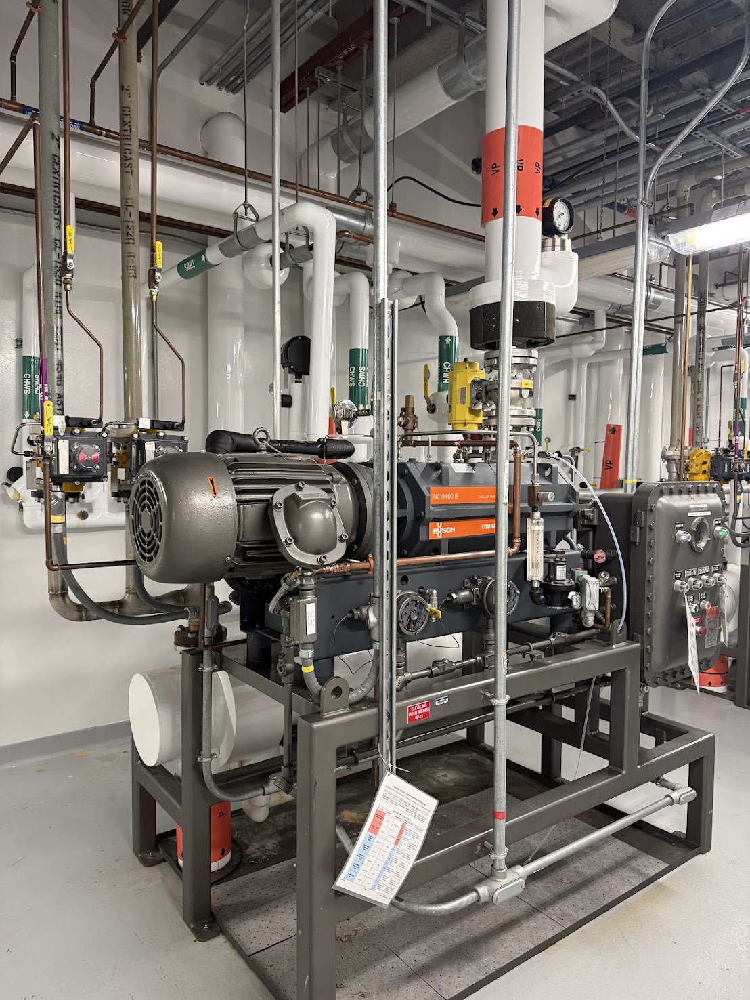
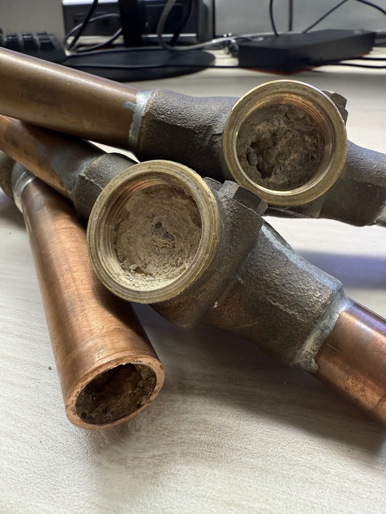

Boehringer Ingelheim · Global Facilities & Engineering Intern
Vacuum Pump Reliability Solution
As a Global Facilities & Engineering Intern at Boehringer Ingelheim, I was asked to look into a vacuum pump system that had been experiencing recurring reliability issues, causing unplanned downtime across a GMP pharmaceutical manufacturing facility.


I reviewed maintenance and failure history, walked the equipment with facilities staff and the vendor, and worked through possible failure modes to isolate the root cause of the repeated issues rather than continuing to treat individual breakdowns as they came up.

Mineral scale buildup inside pipe fittings, part of what I traced the reliability issue back to.
From there, I coordinated with the facilities and vendor teams on a fix targeting that root cause, aimed at reducing unplanned downtime and improving the pump's long-term reliability — a small-scale but complete example of diagnosing a persistent equipment issue and following it through to a lasting solution.